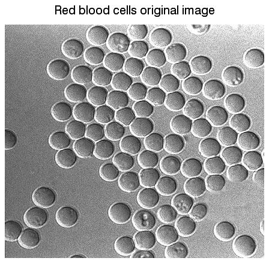
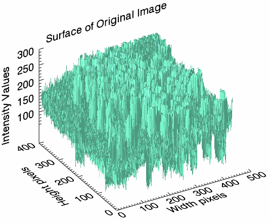
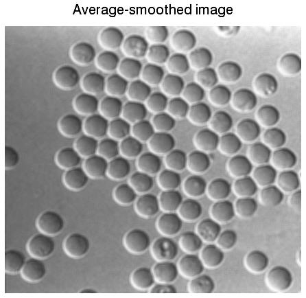
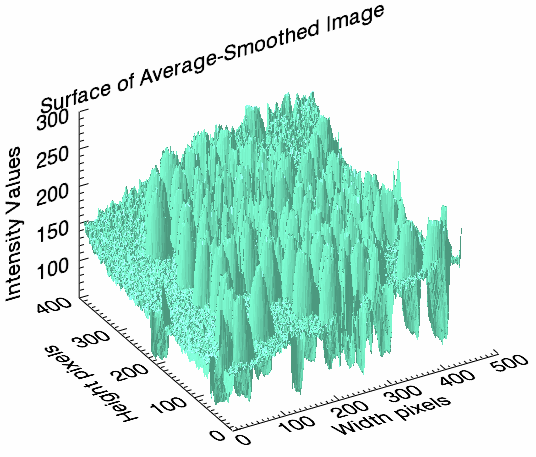
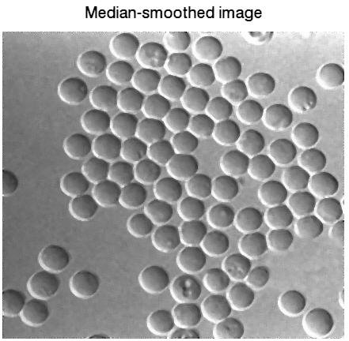
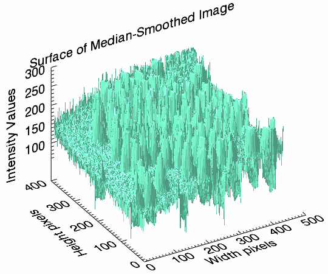

Smoothing is used to reduce noise or to produce a less pixelated image. Most smoothing methods are based on low-pass filters, but you can also smooth an image using an average or median value of a group of pixels (a kernel ) that moves through the image.
The following example uses the
SMOOTH
and
MEDIAN
functions with a moving average on a photomicrograph image of human red blood cells. This example data is available in the
examples/data
directory of your IDL installation.
The code shown below creates the following images, each displayed in separate windows.
|  |  |
|  |  |
|  |  |
Copy the entire code block and paste it into the IDL command line to run it.
; Select the file.
file = FILEPATH('rbcells.jpg', $
SUBDIRECTORY = ['examples', 'data'])
; Use READ_JPEG to define the image as byte data for
; the SURFACE function.
READ_JPEG, file, rbcimage
; Display the image.
img01 = IMAGE(rbcimage, LOCATION = [0, 0], $
TITLE = 'Red blood cells original image')
; Display the image as a 3D surface. The resulting image shows
; many discontinuous values as sharp spikes in the middle range
; of values.
s1 = SURFACE(rbcimage, LOCATION = [500, 0], $
XTITLE = 'Width pixels', $
YTITLE = 'Height pixels', $
ZTITLE = 'Intensity Values', $
TITLE = 'Surface of Original Image', $
COLOR = 'aquamarine', $
ZTICKVALUES = [100, 150, 200, 250, 300])
(s1['zaxis']).location = [0, (s1.yrange)[1], 0]
; Smooth the image with the SMOOTH function, which uses the
; average value of a moving 5 x 5 kernel applied to each pixel
; in the image.
smoothed_image = SMOOTH(rbcimage, 5, /EDGE_TRUNCATE)
; Display the average-smoothed image.
img02 = IMAGE(smoothed_image, LOCATION = [0, 50], $
TITLE = 'Average-smoothed image')
s2 = SURFACE(smoothed_image, location = [500, 50], $
XTITLE = 'Width pixels', $
YTITLE = 'Height pixels', $
ZTITLE = 'Intensity Values', $
TITLE = 'Surface of Average-Smoothed Image', $
COLOR = 'aquamarine', $
ZTICKVALUES = [100, 150, 200, 250, 300])
; move the z-axis to the back
(s2['zaxis']).location = [0, (s2.yrange)[1], 0]
; Smooth the image with the MEDIAN function, which uses the
; median value of a moving 5 x 5 kernel applied to each pixel
; in the image.
median_image = MEDIAN(rbcimage, 5)
; Display the median-smoothed image.
img03 = image(median_image, LOCATION = [0, 100], $
TITLE = 'Median-smoothed image')
s3 = SURFACE(median_image, LOCATION = [500, 100], $
XTITLE = 'Width pixels', $
YTITLE = 'Height pixels', $
ZTITLE = 'Intensity Values', $
TITLE = 'Surface of Median-Smoothed Image', $
COLOR = 'aquamarine', $
ZTICKVALUES = [100, 150, 200, 250, 300])
; move the z-axis to the back
(s3['zaxis']).location = [0, (s3.yrange)[1], 0]